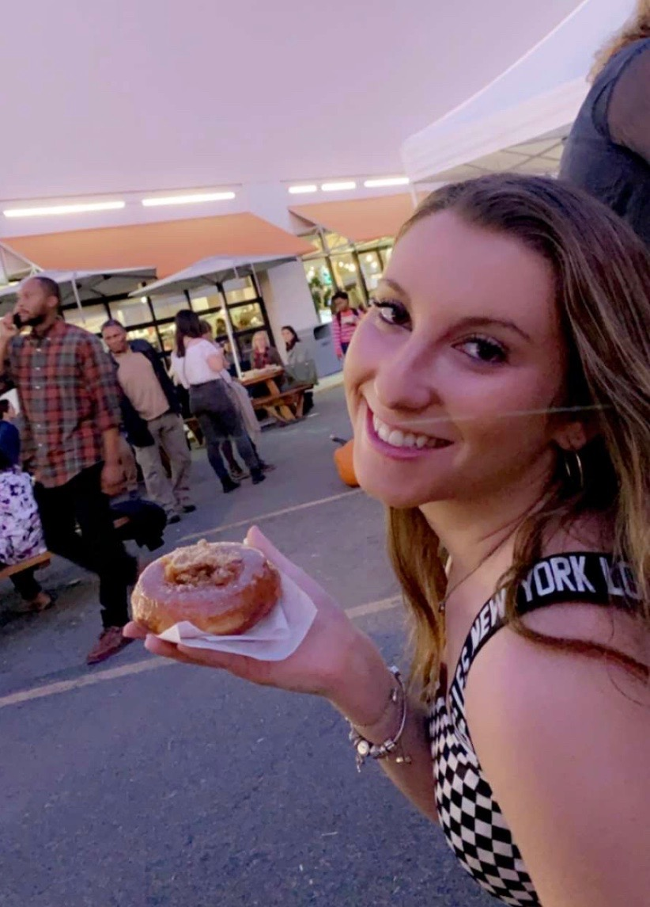

As a media relations intern, I’ve had the opportunity to master my skills of what I have learned in journalism regarding transcribing and design. Through this internship, I create graphic designs through photoshop, transcribe interviews of the players and help run the social media accounts of the University’s sports teams.
While working for jInternship, a company based in Israel, I worked with Photoshop and Canva to create flyers, graphics, logos, gifs, as well as wrote articles to help them promote their business worldwide.
As a receptionist at a chiropractic office, I managed patients, answered the telephone, made copies, faxed papers and created folders.
As a marketing intern for the athletic department, I got to be a part of the behind the scenes work to make the games run smoothly. I helped promote the University’s athletics by giving out posters, doing t-shirt tosses at games, answering questions from fans, and coming up with marketing strategies.
I organized, led and implemented programs and experiences of children from 12-16 years old during my experience as a sleepaway camp counselor.
As a hostess, I managed reservations, greeted customers, handled seating arrangements, answered phone calls and any questions customers had.